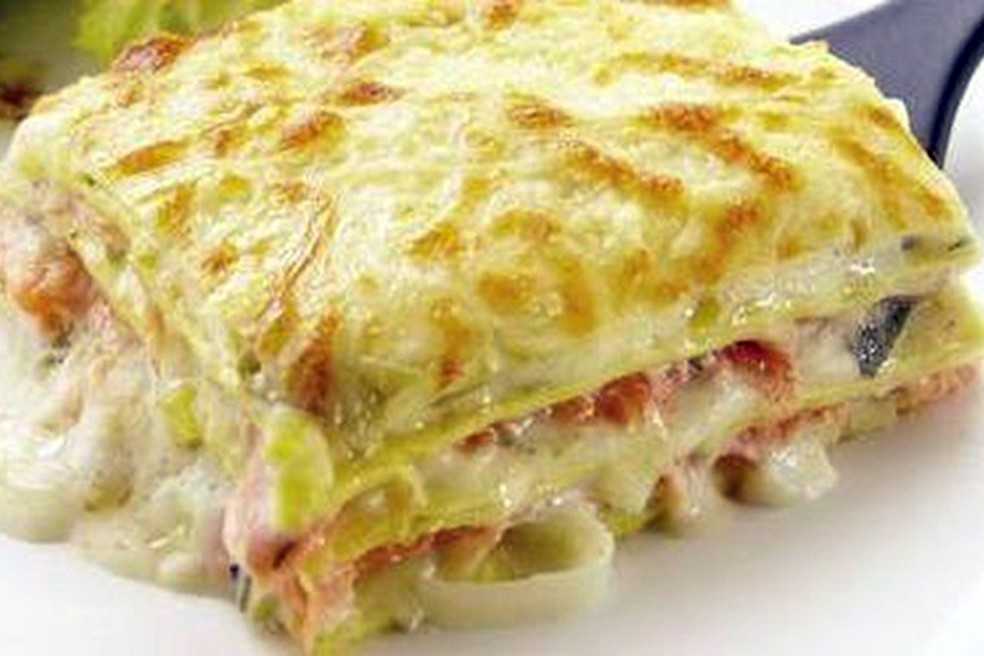

Lasanha de frango

ingredientes:
1 peito de frango
500 gramas de queijo muçarela fatiado
400 gramas de presunto fatiado
1 pacote médio de massa para lasanha, direto ao forno, sem cozimento prévio
1 pote de requeijão cremoso
2 tabletes de caldo de galinha ou tempero completo sabor galinha
2 copos de leite
1 caixa de creme de leite
2 colheres de sopa de farinha
3 colheres de sopa de manteiga
1 cebola média
Modo de Preparo - Molho
1. Faça um creme homogêneo com as 2 colheres de farinha e 2 colheres de manteiga .
2. Reserve 1 colher de manteiga.
3. Acrescente o leite, 1 caldo de galinha e mexa constantemente.
4. Retire do fogo e acrescente o creme de leite. Reserve.
Modo de Preparo - Frango
1. Cozinhe o peito de frango em água sem óleo.
2. Após cozido, desfie o frango, pique a cebola em pedaços pequenos, coloque em uma panela e doure com a manteiga.
3. Acrescente o frango e o caldo de galinha, depois mexa sempre até o frango ficar totalmente dourado.
Modo de Preparo - Montagem
1. Em um refratário, coloque 2 conchas de molho.
2. Faça a base com massa de lasanha, cubra com 1 camada de presunto, 1 de queijo e 1 de frango, exatamente nesta ordem.
3. Sobre o frango coloque 1 camada de requeijão e, em seguida, acrescente 2 conchas de molho.
4. Cubra o requeijão com 1 camada de presunto, 1 camada de queijo e 1 camada de massa.
5. Coloque molho, e repita esse processo até faltar cerca de 2,5 centímetros para chegar na borda da assadeira.
6. Para finalizar, cubra a lasanha com muito queijo e requeijão e molho.
7. Asse por aproximadamente 20 minutos em fogo baixo.
O segredo para um molho da lasanha ficar cremoso e suculento está no caldo de galinha, que também é ingrediente do frango cozido e desfiado. O caldo de galinha vai deixar a cor do frango dourada e o resultado é delicioso.